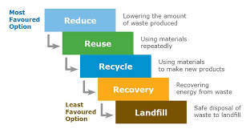
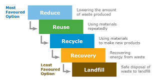

Domestic waste is a growing problem that has serious consequences for the environment. As our population grows and consumption patterns change, we are generating more waste than ever before. This waste ends up in landfills, where it can take hundreds of years to decompose and release harmful gases into the atmosphere.
In addition to the environmental impact, domestic waste also poses health hazards and depletes natural resources. Improper disposal of hazardous waste can lead to contamination of soil and water sources, while the extraction of raw materials for consumer goods contributes to deforestation and other forms of habitat destruction
The Problem: Domestic Waste
The Need for a Solution
Domestic waste has serious consequences on the environment, including pollution, health hazards, and depletion of natural resources.
Pollution is one of the most significant consequences of domestic waste. When waste is not properly disposed of, it can contaminate the air, water, and soil. This contamination can lead to a variety of health problems for both humans and animals, including respiratory illnesses, cancers, and reproductive issues. Additionally, domestic waste can contribute to climate change by releasing greenhouse gases into the atmosphere.
Importance of waste management in
keeping the environment clean
Recycling and Re-use:
Waste management allows the re-use of things we consider as garbage. It helps us meet our needs while also ensuring that the environment isn’t exploited again and again. Recycling also gives people new ways to earn. It opens up business opportunities.
Health:
Accumulating and storing garbage for a very long time can emit toxic chemicals that can adversely affect one’s health. Exposure to such waste can make a person develop skin irritations, growth problems, reproductive problems, respiratory problems, and blood infections. Waste Management helps reduce these hazardous diseases and illnesses. It also improves public and community health conditions as it improves sanitation, removes breeding ground for mosquitoes, and reduces air pollution through waste burning.
Climate Change:
Many industries dispose of effluents and smoke directly into the environment without filtering or treating it. Sometimes people burn their trash as a way of discarding it. All these activities lead to increased greenhouse gas production that causes global warming and affects the ozone layer. Proper Waste Management uses different types of techniques such as incinerators, filters, and liners to make sure that these toxic chemicals get separated from smoke and effluents and stop them from entering the atmosphere.
Make money:
From a business point of view, if you live in an area where there are piles and heaps of garbage, you can form a community of some people for your waste collection business. Residents and several companies are willing to pay someone who can get rid of their wastes. Moreover, you can recycle garbage and make useful products, and then resell them; This will help not only in cleaning your cities but can also be a major step in restoring the greenery of our planet.
Waste management allows the re-use of things we consider as garbage. It helps us meet our needs while also ensuring that the environment isn’t exploited again and again. Recycling also gives people new ways to earn. It opens up business opportunities.
Health:
Accumulating and storing garbage for a very long time can emit toxic chemicals that can adversely affect one’s health. Exposure to such waste can make a person develop skin irritations, growth problems, reproductive problems, respiratory problems, and blood infections. Waste Management helps reduce these hazardous diseases and illnesses. It also improves public and community health conditions as it improves sanitation, removes breeding ground for mosquitoes, and reduces air pollution through waste burning.
Climate Change:
Many industries dispose of effluents and smoke directly into the environment without filtering or treating it. Sometimes people burn their trash as a way of discarding it. All these activities lead to increased greenhouse gas production that causes global warming and affects the ozone layer. Proper Waste Management uses different types of techniques such as incinerators, filters, and liners to make sure that these toxic chemicals get separated from smoke and effluents and stop them from entering the atmosphere.
Make money:
From a business point of view, if you live in an area where there are piles and heaps of garbage, you can form a community of some people for your waste collection business. Residents and several companies are willing to pay someone who can get rid of their wastes. Moreover, you can recycle garbage and make useful products, and then resell them; This will help not only in cleaning your cities but can also be a major step in restoring the greenery of our planet.
The Steps
- Region specific planning: Every region has a different structure. Hence all the activities should be planned & implemented on regional basis looking at the geographical, topographical and cultural diversity of the country.
- Planning from below: To make Solid Waste Management a success in true sense, the planning as well as implementation should start from general public level planning followed by block level planning, district level planning and state level planning.
- Involvement of self help groups, youth groups and small entrepreneurs: The general public level waste management units can be run by self help groups, youth groups or small entrepreneurs. This will help in making the programme self supportive and sustainable.
- Well planned and effective training policy: Technical training at all levels General public to state forms the backbone of a successful waste management programme. Adequate training must be given to all those concerned prior to actual launching of the programme in the field.
Classification of Waste
 There may be different types of waste such as Domestic waste, Factory waste, Waste from oil factory, E-waste, Construction waste, Agricultural waste, Food processing waste, Bio-medical waste, Nuclear waste, Slaughter house waste etc. We can classify waste as follows:
There may be different types of waste such as Domestic waste, Factory waste, Waste from oil factory, E-waste, Construction waste, Agricultural waste, Food processing waste, Bio-medical waste, Nuclear waste, Slaughter house waste etc. We can classify waste as follows:
- Solid waste- vegetable waste, kitchen waste, household waste etc.
- E-waste- discarded electronic devices such as computer, TV, music systems etc.
- Liquid waste- water used for different industries, tanneries, distilleries, thermal power plants • Plastic waste- plastic bags, bottles, bucket, etc.
- Metal waste- unused metal sheet, metal scraps etc.
- Nuclear waste- unused materials from nuclear power plants
 Further we can group all these types of waste into wet waste (Biodegradable) and dry waste (non-Biodegradable).
Further we can group all these types of waste into wet waste (Biodegradable) and dry waste (non-Biodegradable).
Wet waste (Biodegradable)
includes the following:- Kitchen waste including food waste of all kinds, cooked and uncooked, including eggshells and bones.
- Flower and fruit waste including juice peels and house-plant waste
- Garden sweeping or yard waste consisting of green/dry leaves
- Sanitary wastes
- Green waste from vegetable & fruit vendors/shops
- Waste from food & tea stalls/shops etc.
Dry waste (Non-biodegradable)
includes the following:- Paper and plastic and all kinds of cardboard and cartons.
- Containers of all kinds excluding those containing hazardous material .
- Rags, rubber
- Foils, wrappings, pouches, sachets and tetra packs (rinsed).
- Discarded electronic items from offices, colonies viz. cassettes, computer diskettes, printer cartridges and electronic parts.
- Discarded clothing, furniture and equipment.
Effective Strategies of Solid Waste Management
⦁ 1) 4Rs: Refuse, Reduce, Reuse & Recycle


2) Segregation at source: Store organic or biodegradable and inorganic or non-biodegradable solid waste in different bins. Recycle of all the components with minimum labour and cost.
3) Different treatments for different types of solid wastes: One must apply the techniques which are suitable to the given type of garbage. For example, the technique suitable for general market waste may not be suitable for slaughter house waste.
4) Treatment at nearest possible point: The solid waste should be treated in as decentralized manner as possible. The garbage generated should be treated preferably at the site of generation i.e., every house. Based on the above principles, an ideal Solid Waste Management for a village could be as under
- Refuse - Do not buy anything which we do not really need.
- Reduce - Reduce the amount of garbage generated. Alter our lifestyle so that minimum garbage is generated.
- Reuse - Reuse everything to its maximum after properly cleaning it. Make secondary use of different articles.
- Recycle – Keep things which can be recycled to be given to rag pickers or waste pickers (Kabadiwallahs). Convert the recyclable garbage into manures or other useful products.

2) Segregation at source: Store organic or biodegradable and inorganic or non-biodegradable solid waste in different bins. Recycle of all the components with minimum labour and cost.
3) Different treatments for different types of solid wastes: One must apply the techniques which are suitable to the given type of garbage. For example, the technique suitable for general market waste may not be suitable for slaughter house waste.
4) Treatment at nearest possible point: The solid waste should be treated in as decentralized manner as possible. The garbage generated should be treated preferably at the site of generation i.e., every house. Based on the above principles, an ideal Solid Waste Management for a village could be as under
Effective Strategies of E-waste Management
 One of the most effective ways to manage electronic waste is through recycling. When electronics are recycled, valuable materials such as gold, silver, and copper can be extracted and reused in new products. This not only reduces the amount of waste in landfills, but also conserves natural resources and reduces the environmental impact of mining.
One of the most effective ways to manage electronic waste is through recycling. When electronics are recycled, valuable materials such as gold, silver, and copper can be extracted and reused in new products. This not only reduces the amount of waste in landfills, but also conserves natural resources and reduces the environmental impact of mining.  Another strategy is refurbishing. Refurbished electronics are devices that have been repaired or restored to their original condition, making them usable once again. By refurbishing electronics, we can extend their lifespan and reduce the need for new devices to be manufactured. This helps to conserve resources and reduce the amount of e-waste.
Another strategy is refurbishing. Refurbished electronics are devices that have been repaired or restored to their original condition, making them usable once again. By refurbishing electronics, we can extend their lifespan and reduce the need for new devices to be manufactured. This helps to conserve resources and reduce the amount of e-waste. Finally, responsible disposal is crucial for managing e-waste. This involves ensuring that electronics are disposed of in an environmentally friendly way, such as through certified e-waste recycling programs or donation to organizations that can make use of them. By disposing of electronics responsibly, we can prevent them from ending up in landfills where they can release harmful chemicals into the environment.
Effective Strategies for Liquid Waste Management.
 One effective strategy for liquid waste management is to implement a treatment system. This involves using physical, chemical or biological processes to remove contaminants from the waste before it is discharged into the environment. Treatment methods can include sedimentation, filtration, and disinfection.
One effective strategy for liquid waste management is to implement a treatment system. This involves using physical, chemical or biological processes to remove contaminants from the waste before it is discharged into the environment. Treatment methods can include sedimentation, filtration, and disinfection. Another strategy is to properly dispose of the treated waste. This can involve land application, where the treated waste is used as fertilizer for crops, or injection wells, where the waste is injected deep into the ground. It is important to choose a disposal method that is safe for both human health and the environment.
Solutions for Effective Plastic Waste Management
.jpeg) 
Recycling is one of the most effective ways to manage plastic waste. By collecting and processing used plastics, we can turn them into new products and reduce the amount of waste that ends up in landfills or oceans.

Recycling is one of the most effective ways to manage plastic waste. By collecting and processing used plastics, we can turn them into new products and reduce the amount of waste that ends up in landfills or oceans. Another solution is to reduce our use of single-use plastics, such as straws, bags, and utensils. This can be achieved by using reusable alternatives, like metal straws or cloth bags, or by choosing products with minimal packaging.
Finally, implementing better waste management systems, such as composting and incineration, can help divert plastic waste from landfills and reduce its impact on the environment.
Simple Steps to Manage Your Metal Waste
One of the most efficient and common ways to deal with metal scraps is to sell them to another company and treat scrap metal as a revenue source. The following advice is helpful when choosing a metal recycler:

Reduce your metal waste by purchasing products with less packaging or by choosing reusable alternatives. For example, using a refillable water bottle instead of buying single-use plastic bottles can greatly reduce your metal waste.
- Know the current market price so that your business gets a fair return
- Ensure that recyclers provide complete records of all transactions with your business
- Confirm that recyclers use metal analysis equipment such as a spectrometer to verify the type and grading of metal(s) being recycled
Reduce your metal waste by purchasing products with less packaging or by choosing reusable alternatives. For example, using a refillable water bottle instead of buying single-use plastic bottles can greatly reduce your metal waste.
The Role of Government


The Role of Individuals
As individuals, we all have a role to play in reducing domestic waste and protecting the environment. One of the most important things we can do is to reduce our consumption of single-use products, such as plastic bags, straws, and water bottles. By opting for reusable alternatives, we can significantly reduce the amount of waste we generate.
- Keep ourself informed: It is important that we are in the know about what is happening on the environment front.The more informed we are, the better equipped we are to fight such issues.
- Consume less: Motto: Refuse…..Reduce….Reuse… Recycle .This means consuming fewer resources, reusing whatever we can and finally recycling what cannot be reused. This process greatly reduces the garbage.
- Say ‘No’ to plastic bags: One of the biggest sources of pollution in Indian cities is the ubiquitous plastic bag. Refuse to accept one. Instead, carry a cloth shopping bag with us.
- Separate our garbage: India has one of the world’s most efficient recycling mechanisms. Use the service of our raddiwalla. Newspapers, bottle cans and other such recyclables can fetch us money and in the process we can help to save the environment. Rag pickers, too, perform a vital function for the city. Kitchen garbage (biodegradable) should be separated from nonbiodegradable waste.
- Compost our organic waste: Start a vermiculture bin. We can convince our neighbours to start a vermiculture bin also to produce manure.
- Stop burning garbage: Ask our neighbours to desist from burning solid wastes. It may seem harmless but smoke emitted from leaves contributes to air pollution. Also, when there are plastic in the heap, it emits dangerous toxic fumes. Leaves can be converted to fertilizer through composting & plastic can be recycled.
The Benefits of Effective Waste Management
 Effective waste management has numerous benefits for both the environment and human health. One of the most significant benefits is a cleaner environment, which can lead to improved air and water quality. This is because properly managed waste reduces the amount of pollutants that can seep into the soil and waterways. Additionally, effective waste management can help reduce greenhouse gas emissions, which contribute to climate change.
Effective waste management has numerous benefits for both the environment and human health. One of the most significant benefits is a cleaner environment, which can lead to improved air and water quality. This is because properly managed waste reduces the amount of pollutants that can seep into the soil and waterways. Additionally, effective waste management can help reduce greenhouse gas emissions, which contribute to climate change. Another important benefit of effective waste management is improved public health. Poorly managed waste can lead to health hazards such as the spread of diseases and pests, as well as exposure to hazardous chemicals. By managing waste properly, we can prevent these health risks and create a safer living environment for ourselves and future generations.
HELPLINE CONTACTS
Contact details of the MEFCC
Address: Indira Paryavaran Bhawan Jorbagh Road, New Delhi – 110 003 INDIA.
Phone No: 011-20819220, 011-20819280
Website: click here
Synergy Waste Management Pvt. Ltd.
Synergy Waste Management is one of the best biomedical waste management companies in India.
With twenty years of experience,there are serving more than 8,000 hospitals in India with economically
sustainablestructural models. They have set up eight Common Bio-medical Waste Treatment and Disposal Facilities
(CBWTF) in different states across India with their resources
and capabilities. Their projects are set up in Hisar, Meerut, Barabanki, Bhagalpur, Gaya.
Address:517-518, D-Mall, Sector-10, Rohini. New Delhi-110085
Email: info@synergyworld.co.in
Contact number: +91-11-27933371/81/82
Attero
Attero is an E-waste management company. They spin around the unwanted electronics into sustainable resources.
End of life electronics are recycled at their recycling units using disruptive technology. Attero recovers nearly
98% of high-quality minerals through its cutting edge technology. And they are India's largest producers of Tin.
Contact them: https://attero.in/contact/
Contact number: 1800-102-9882
e news
Bollywood News
Catch the latest news about indian film industry and know what the celebs are upto....
read moreSports News
Stay tuned with the game! Don't miss the spicy news about cricket , football and.....
read moreWaste & Pollution
Pollution is at a all time high , learn about waste and pollution measures and .....
read moreStock & Finance
Look before you leap , know the current market status and make investments....
read more